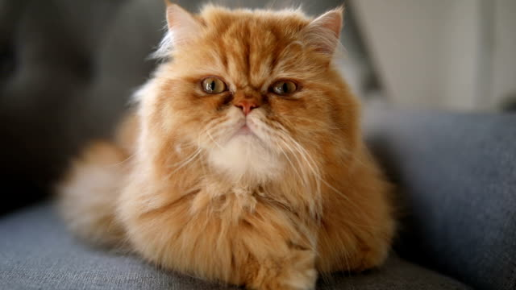
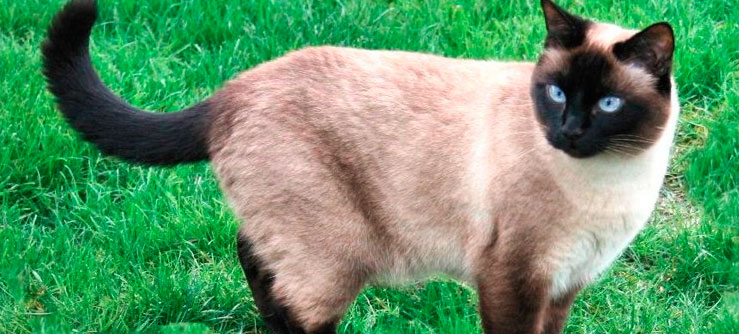
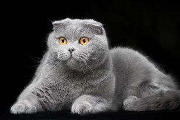
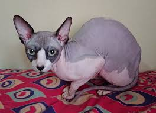
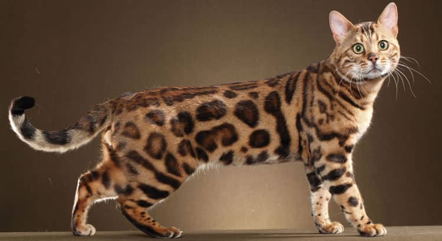
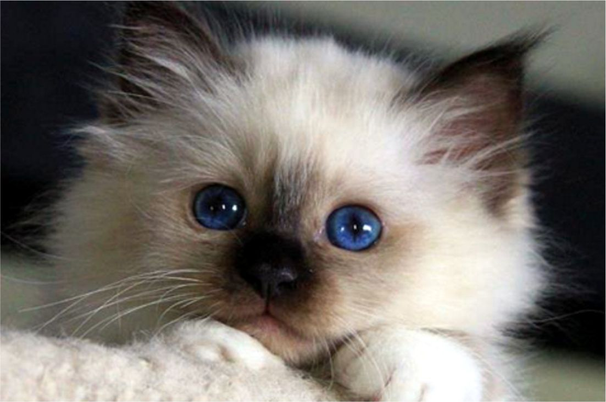

O que são?O gato (Felis silvestris catus), também conhecido como gato caseiro, gato urbano ou gato doméstico,é um mamífero carnívoro da família dos felídeos, muito popular como animal de estimação. Ocupando o topo da cadeia alimentar, é predador natural de diversos animais, como roedores, pássaros, lagartixas e alguns insetos. Segundo pesquisas realizadas por instituições norte-americanas, os gatos consistem no segundo animal de estimação mais popular do mundo, estando atrás apenas dos peixes de aquário. Dados censitários apontam que nos Estados Unidos existem mais gatos domésticos do que cachorros. HistóriaA primeira associação com os humanos da qual se tem notícia ocorreu há cerca de 9 500 anos, período superior ao estimado anteriormente, que oscilava entre 3 500 e 8 000 anos. A subfamília Felinae, que agrupa os gatos domésticos, surgiu há cerca de 12 milhões de anos, expandindo-se a partir da África subsariana até alcançar as terras do atual Egito. Acredita-se que o gato-selvagem-africano (Felis silvestris lybica) era seu antepassado imediato e evidencias genéticas assinalam que os gatos domésticos atuais partilham uma procedência direta com os gatos selvagens do Oriente Médio. Existem cerca de 250 raças de gato doméstico, cujo peso variável entre 2,5 a 12 kg classifica a espécie como animal doméstico de pequeno a médio porte. Assim como ocorre com as raças de cães que apresentam esta mesma faixa de peso, o gato doméstico pode viver entre quinze e vinte anos. Devido à sua personalidade independente, tornou-se um animal de companhia em diversos lares ao redor do mundo, agradando pessoas dos mais variados estilos de vida. Na cultura humana, figura da mitologia às superstições, passando por personagens de desenhos animados, tiras de jornais, filmes e contos de fadas. Entre suas mais conhecidas representações, estão os gatos: Tom, Frajola, Manda-Chuva, Gato Félix, Gaturro, O Gato de Botas e Garfield. Raças de Gatos

Persa

Siamês

Scottish Fold

Sphynx

Gato Bengala

Sagrado Birmânia
|